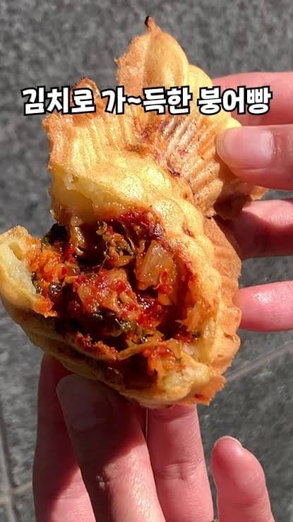
김치붕어빵
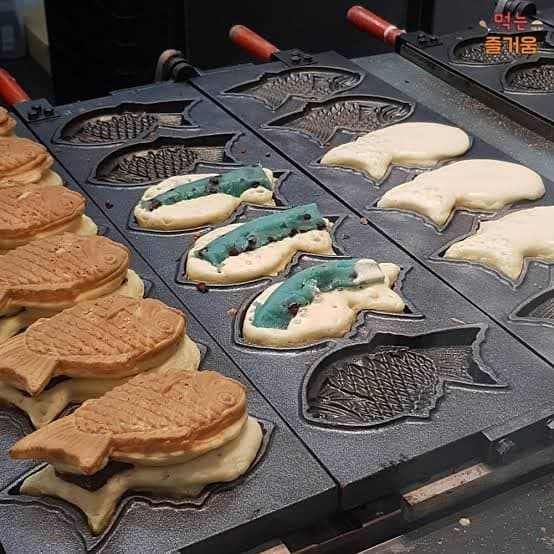
민트초코 붕어빵
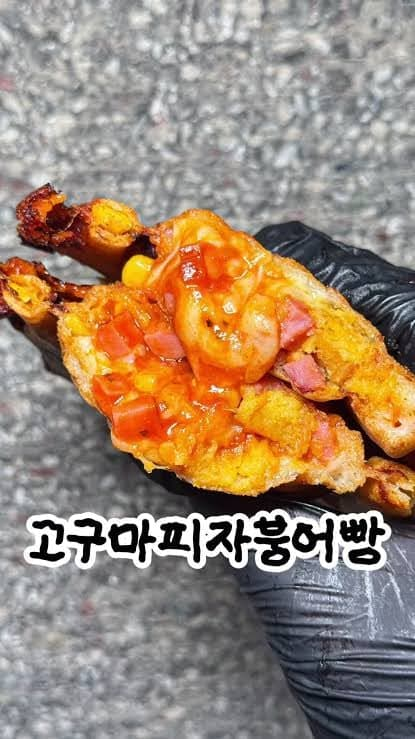
고구마피자 붕어빵
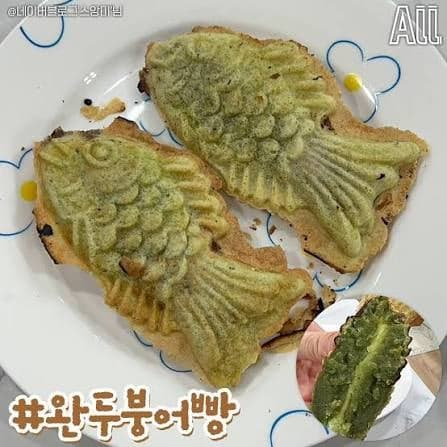
완두붕어빵
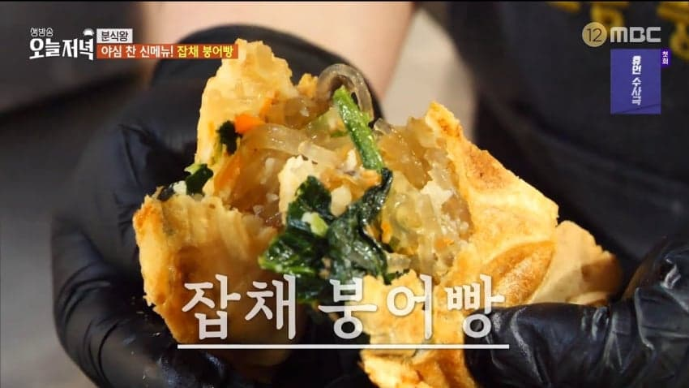
잡채붕어빵
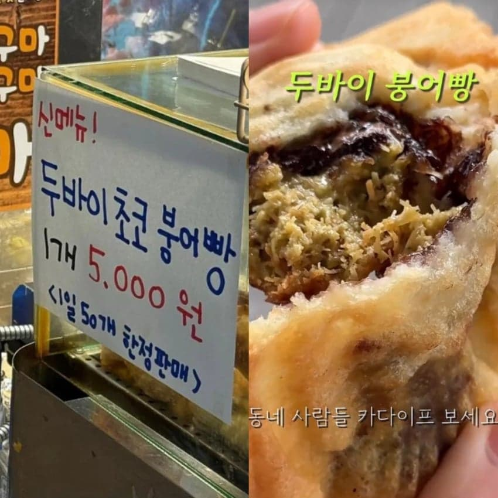
두바이 붕어빵
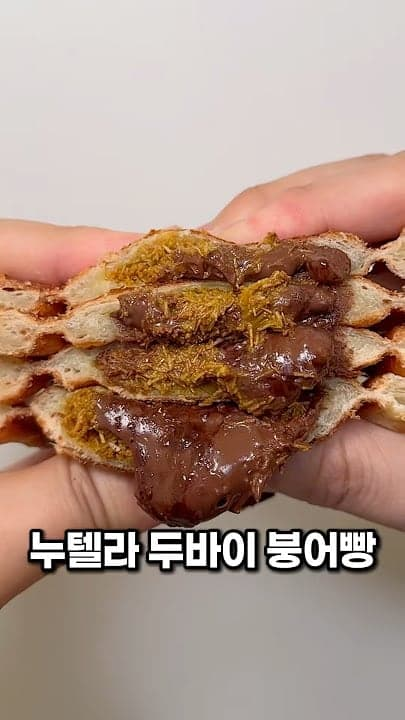
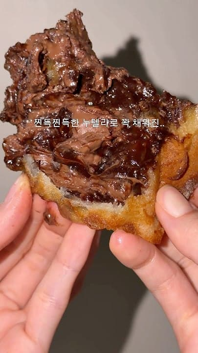
누텔라 붕어빵
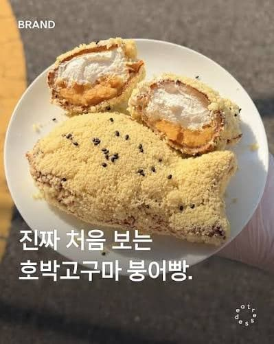
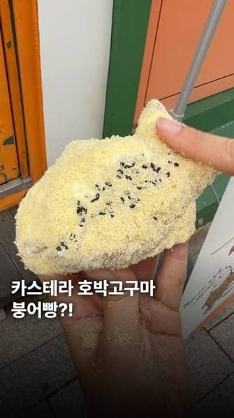
카스테라 붕어빵
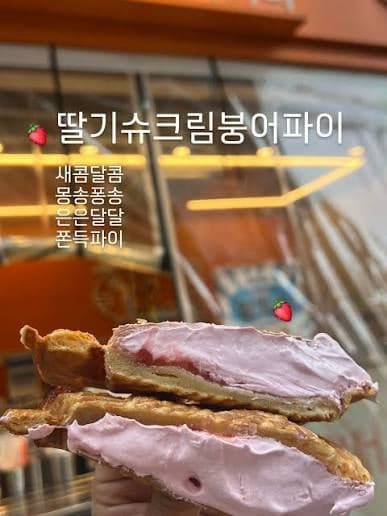
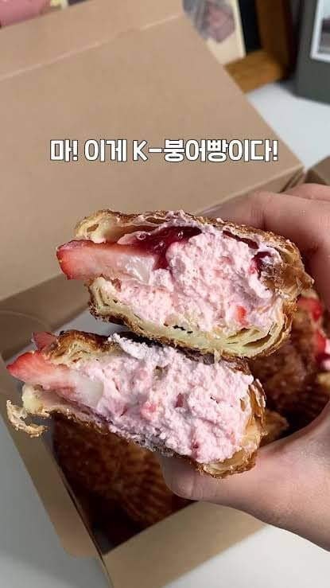
딸기슈크림 붕어빵
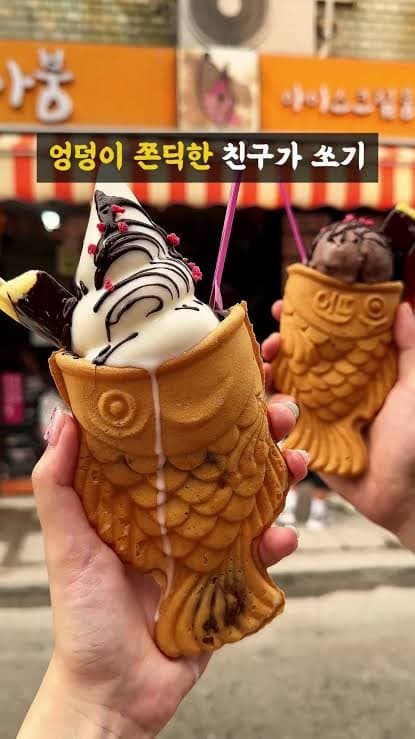
붕어빵 아이스크림
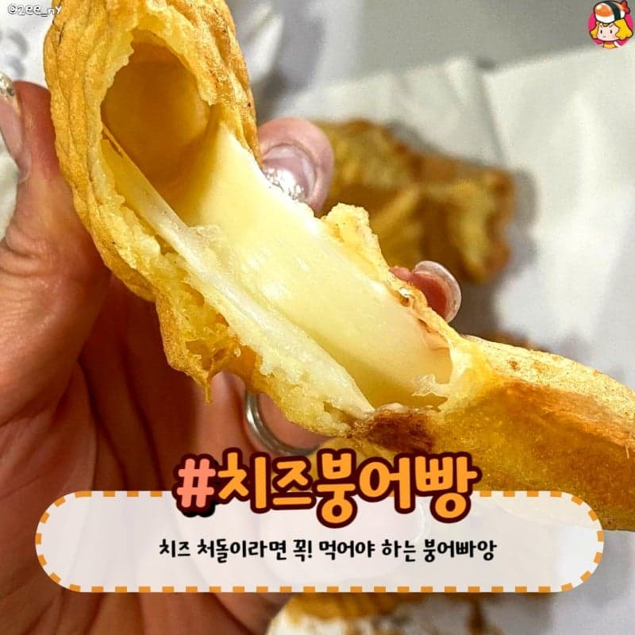
치즈 붕어빵
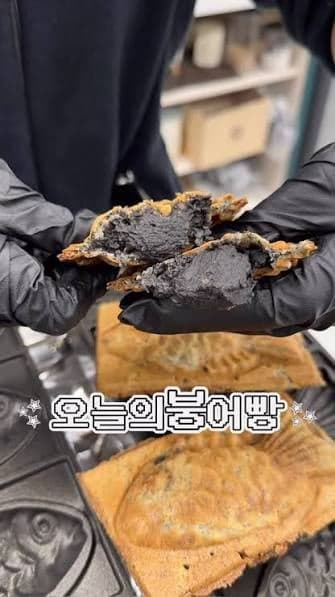
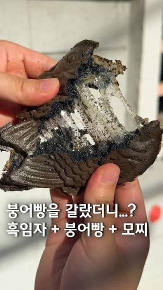
흑임자 붕어빵
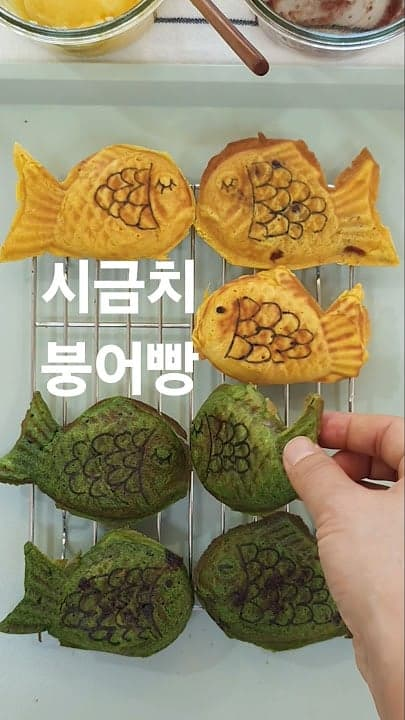
시금치 붕어빵
호떡 붕어빵
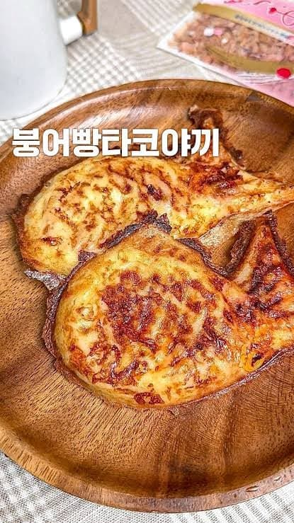
타코야끼 붕어빵
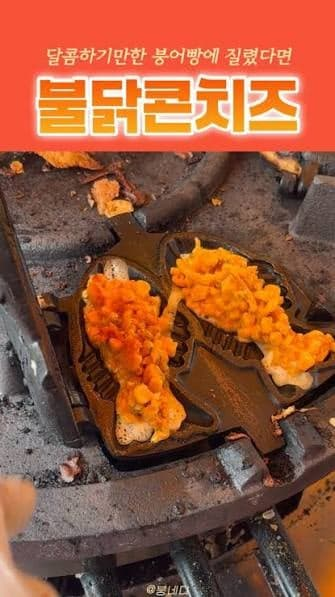
불닭콘치즈 붕어빵
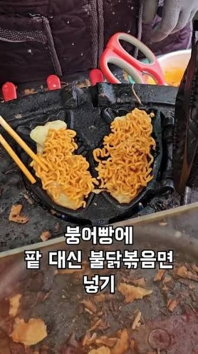
불닭볶음면 붕어빵
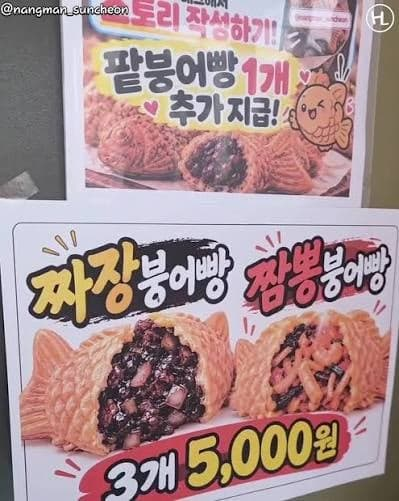
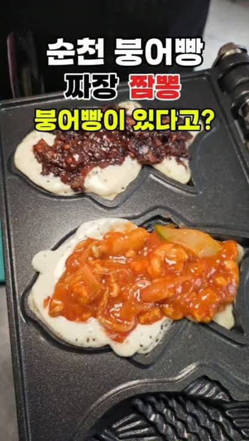
짜장 짬뽕 붕어빵
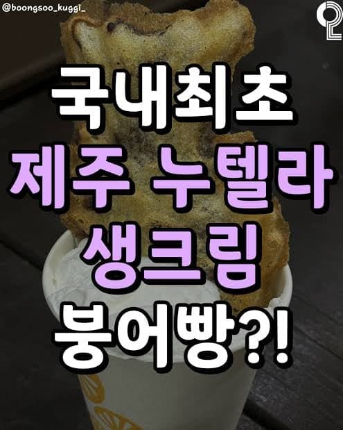
누텔라 생크림 붕어빵
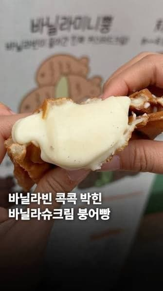
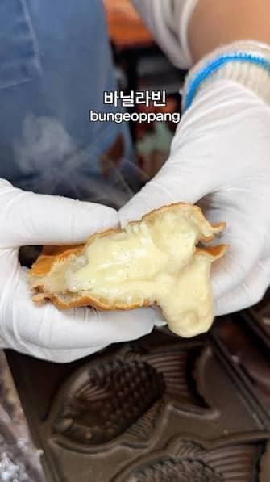
바닐라 붕어빵
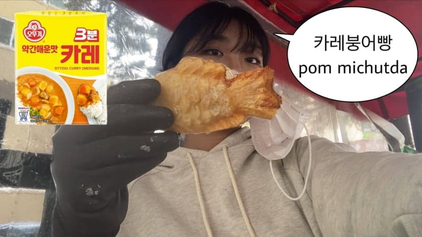
카레 붕어빵
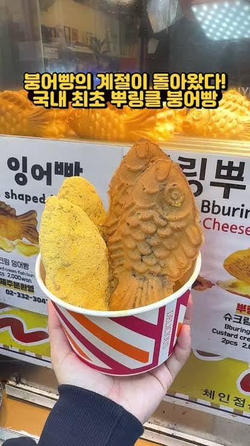
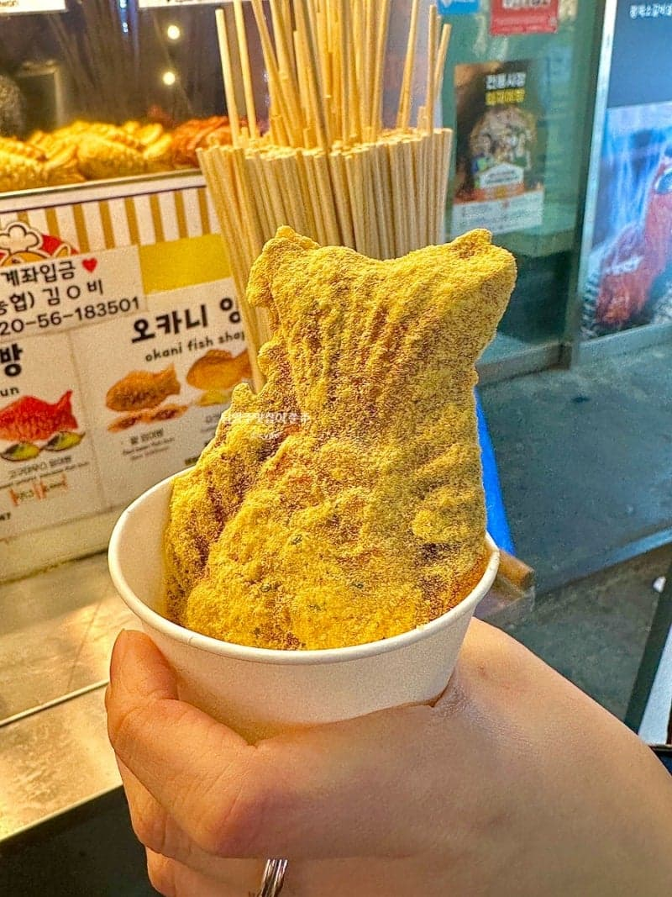
뿌링클 붕어빵
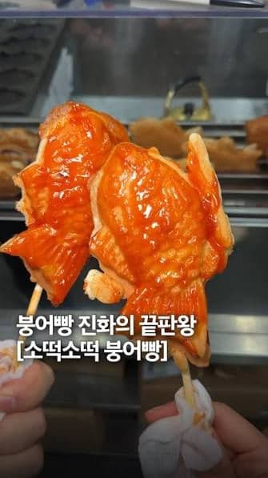
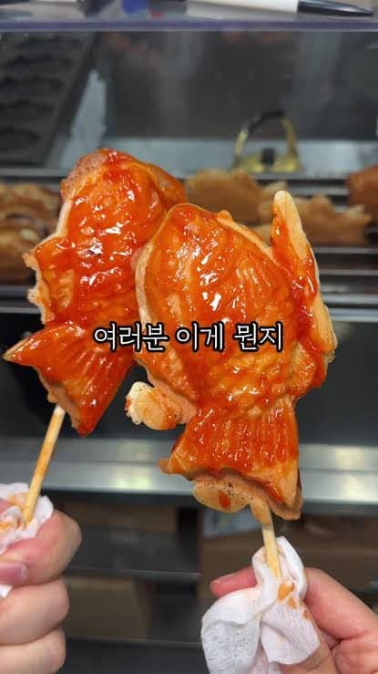
소떡소떡 붕어빵
게살크림 붕어빵
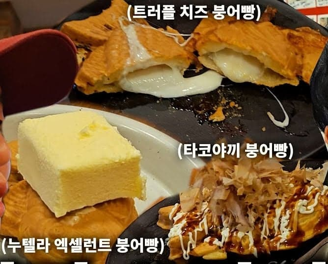
트러플,엑셀런트,타코야끼 붕어빵
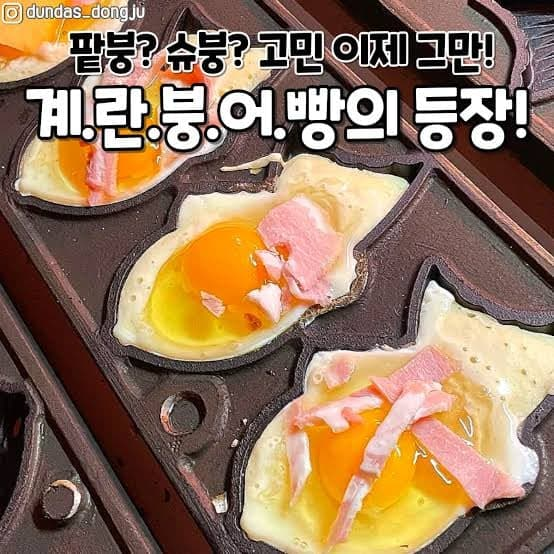
계란 붕어빵
댓글
수집 당시 댓글 152개
· ㅇㅇ · 11.24 00:13:54
ㅇㅇ · 11.24 00:06:05
· ㅇㅇ · 11.24 00:07:03
· 아바다케다브라 · 11.24 00:42:38
ㅇㅇ · 11.24 00:06:43
ㅇㅇ · 11.24 00:07:11
· ㅇㅇ · 11.24 00:13:52
· ㅇㅇ · 11.24 00:57:24
fancyha0102 · 11.24 00:09:08
신 석 열 · 11.24 00:11:39
ㅇㅇ · 11.24 00:12:09
· ㅇㅇ · 11.24 00:58:49
· ㅇㅇ · 11.24 14:26:59
ㅇㅇ · 11.24 00:13:31
ㅇㅇ · 11.24 00:16:11
ㅇㅇ · 11.24 00:17:13
ㅇㅇ · 11.24 00:18:47
ㅇㅇ · 11.24 00:19:02
llllllIllllll · 11.24 00:19:14
ㅇㅇ · 11.24 00:20:38
주리다이노스 · 11.24 00:21:17
■x · 11.24 00:21:26
· ■x · 11.24 00:21:45
· ■x · 11.24 00:22:16
· ■x · 11.24 00:22:30
· ㅇㅇ · 11.24 00:39:17
ㅇㅇ · 11.24 00:22:54
58 · 11.24 00:26:45
ㅇㅇ · 11.24 00:29:16
나도디시콘쓸꺼야 · 11.24 00:34:33
ㅇㅇ · 11.24 00:35:39
· ㅇㅇ · 11.24 08:11:47
아바다케다브라 · 11.24 00:38:02
ㅇㅇ · 11.24 00:38:36
heyzle · 11.24 00:43:06
롤클리너리필 · 11.24 00:43:07
ㅇㅇ · 11.24 00:55:59
ㅇㅇ · 11.24 00:56:16
ㅇㅇ · 11.24 00:58:24
ㅇㅇ · 11.24 00:59:28
삭제됨 · 11.24 01:03:56
· ㅇㅇ · 11.24 03:04:46
ㅇㅇ · 11.24 01:04:34
ㅇㅇ · 11.24 01:14:32
ㅇㅇ · 11.24 01:17:08
사라다오딘 · 11.24 01:44:10
ㅇㅇ · 11.24 01:53:01
ㅇㅇ · 11.24 02:06:46
ㅇㅇ · 11.24 02:35:58
ㅇㅇ · 11.24 02:58:25
ㅇㅇ · 11.24 02:59:18
ㅇㅇ · 11.24 02:59:23
ㅇㅇ · 11.24 03:36:25
ㅇㅇ · 11.24 04:02:59
ㅇㅇ · 11.24 04:21:53
ㅇㅇ · 11.24 04:24:30
ㅇㅇ · 11.24 04:37:18
ㅇㅇ · 11.24 04:44:00
ㅇㅇ · 11.24 04:47:42
OO · 11.24 05:38:05
· ㅇㅇ · 11.24 06:47:27
ㅇㅇ · 11.24 06:01:51
ㅇㅇ · 11.24 06:44:11
ㅇㅇ · 11.24 06:47:02
ㅇㅇ · 11.24 06:49:17
ㅇㅇ · 11.24 06:57:11
ㅇㅇ · 11.24 07:00:48
ㅇㅇ · 11.24 07:05:44
ㅇㅇ · 11.24 07:06:22
ㅇㅇ · 11.24 07:33:43
ㅇㅇ · 11.24 07:34:00
ㅇㅇ · 11.24 07:47:08
순수비난 · 11.24 07:50:40
환영여단 · 11.24 08:06:46
ㅇㅇ · 11.24 08:08:17
ㅇㅇ · 11.24 08:08:23
ㅇㅇ · 11.24 08:09:26
ㅇㅇ · 11.24 08:13:20
ㅇㅇ · 11.24 09:02:21
· ㅇㅇ · 11.24 14:32:59
ㅇㅇ · 11.24 09:14:00
ㅇㅇ · 11.24 09:35:48
ㅇㅇ · 11.24 09:37:50
ㅇㅇ · 11.24 09:39:32
아무튼집이좋아. · 11.24 09:56:27
ㅇㅇ · 11.24 10:04:16
ㅇㅇ · 11.24 11:09:38
· ㅇㅇ · 11.24 11:09:58
ㅇㅇ · 11.24 11:53:22
ㅇㅇ · 11.24 12:36:13
ㅇㅇ · 11.24 13:18:56
ㅂㅂ · 11.24 14:14:23
ㅇㅇ · 11.24 14:23:32
ㅇㅇ · 11.24 14:32:48
ㅇㅇ · 11.24 15:02:51
ㅇㅇ · 11.24 15:04:56
ㅇㅇ · 11.24 16:53:09
· ㅇㅇ · 11.24 16:53:53
ㅇㅇ · 11.24 17:03:16
ㅇㅇ · 11.24 17:12:11
ㅇㅇ · 11.22 21:10:01
ㅇㅇ · 11.22 21:10:32
ㅇㅇ · 11.22 21:10:36
ㅇㅇ · 11.22 21:15:42
ㅇㅇ · 11.22 22:01:37
ㅇㅇ · 11.23 23:45:22
JustLoveMemes · 11.23 23:45:31
봇치쟝 · 11.23 23:45:38
· ㅇㅇ · 11.24 00:50:03
악의꽃 · 11.23 23:45:57
ㅇㅇ · 11.23 23:46:14
ㅇㅇ · 11.23 23:46:22
ㅇㅇ · 11.23 23:46:55
용사님 · 11.23 23:47:33
ㅇㅇ · 11.23 23:48:05
· ㅇㅇ · 11.23 23:52:14
씹덕1025일차 · 11.23 23:48:13
ㅇㅇ · 11.23 23:48:43
ㅇㅇ · 11.23 23:49:04
· ㅇㅇ · 11.24 00:33:17
MR4오너 · 11.23 23:49:16
니노미야 · 11.23 23:49:35
쿠트라 · 11.23 23:49:45
ㅇㅇ · 11.23 23:50:05
오탸식 · 11.23 23:51:45
ㅇㅇ · 11.23 23:52:08
ㅇㅇ · 11.23 23:52:20
ㅇㅇ · 11.23 23:52:44
ㅇㅇ · 11.23 23:52:44
해갤러 · 11.23 23:53:30
ㅇㅇ · 11.23 23:53:39
형아어디가 · 11.23 23:55:54
· 형아어디가 · 11.23 23:56:07
· 형아어디가 · 11.23 23:56:23
· 형아어디가 · 11.23 23:56:50
· 형아어디가 · 11.23 23:56:54
· 형아어디가 · 11.23 23:56:58
· 형아어디가 · 11.23 23:57:04
?
ㅇㅇ · 11.23 23:56:39
ㅇㅇ · 11.23 23:56:54
ㅇㅇ · 11.23 23:57:37
우주 · 11.23 23:57:53
ㅇㅇ · 11.23 23:59:13
ㅇㅇ · 11.23 23:59:33
ㅇㅇ · 11.24 00:00:27
ㅇㅇ · 11.24 00:01:09
ㅇㅇ · 11.24 00:01:20
쫵쫵 · 11.24 00:04:23
ㅇㅇ · 11.24 00:04:45
· ㅇㅇ · 11.24 00:07:36
· ㅇㅇ · 11.24 00:08:08
· ㅇㅇ · 11.24 00:13:44